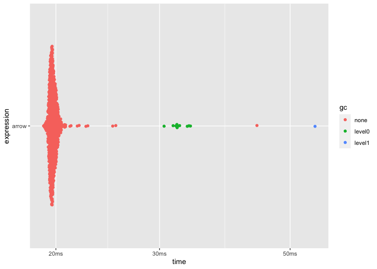
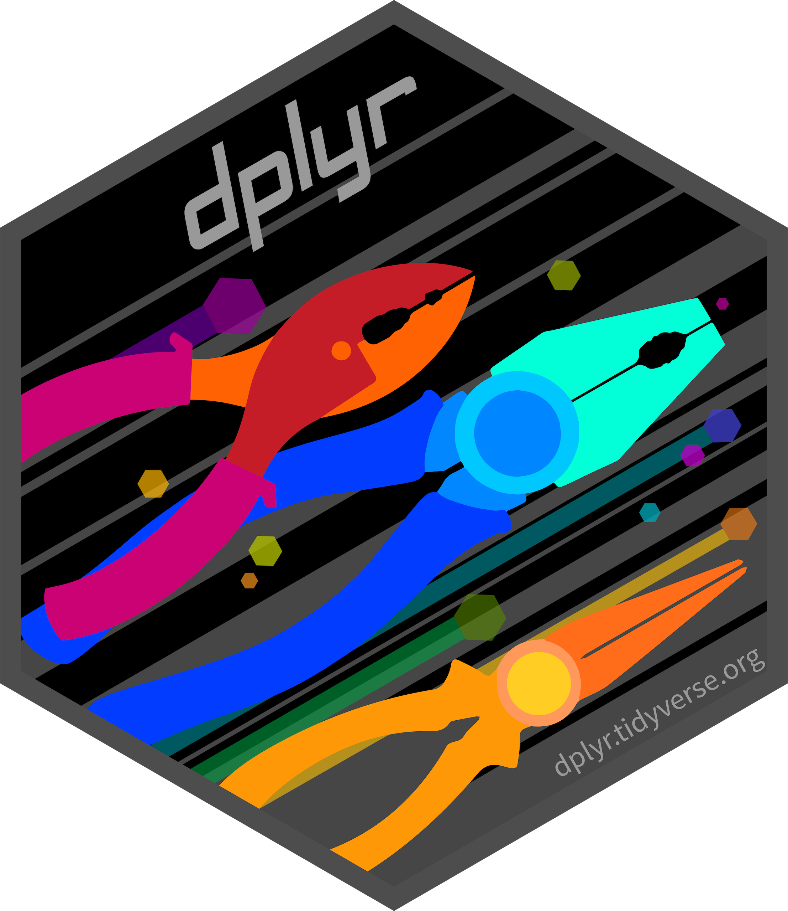
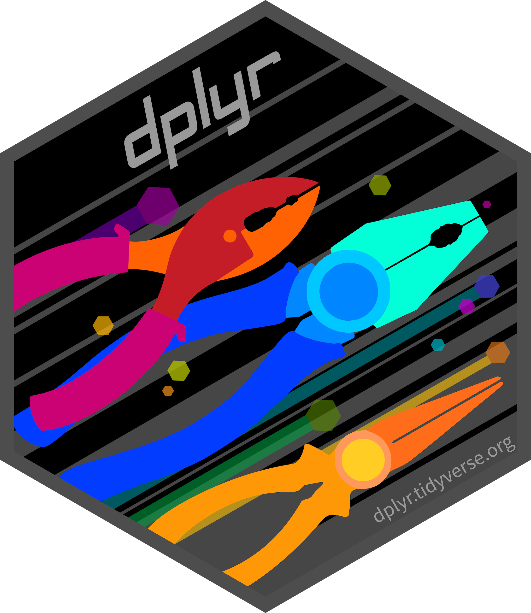
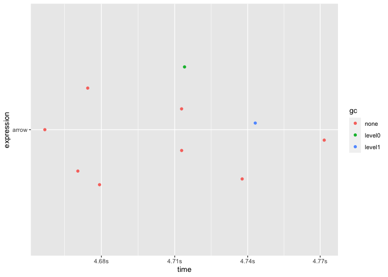

ETL with Arrow and DuckDB
SoCal RUG x UCI Hackathon - 2024.04.27
Palmer Penguins

Artwork by Allison Horst | https://allisonhorst.github.io/palmerpenguins
select
- Using the column (or “variable”) names,
select()let us easily subset the data

Image credit: Duke University https://intro2r.library.duke.edu/wrangle.html
filter
- The
filter()function let’s us keep rows where the provided expression(s) areTRUE

Image credit: Duke University https://intro2r.library.duke.edu/wrangle.html
arrange
- The
arrange()function sorts rows in order of one or more columns - You can arrange in ascending order (the default) or descending order by wrapping the column name in
desc()

Image credit: Duke University https://intro2r.library.duke.edu/wrangle.html
mutate
- Add new columns to your dataframe or tibble with
mutate() - dplyr’s
mutate()is similar to base R’stransform()with the added benefit of being able to reference columns you’ve just created

Image credit: Duke University https://intro2r.library.duke.edu/wrangle.html
Larger-than-Memory Data

Arrow and Parquet 
- Columnar memory format for flat data
- Ultra-fast read times from Parquet files
- Easily convert data.frames and tibbles to Arrow tables in-line
- Plays well with Pandas (Python) and dplyr (R)
- Arrow will soon be able to process nested list data
How fast is fast? 
- My personal laptop has 24 GB RAM
- To test Arrow’s capabilities, I read a 40 GB dataset with over 1.1 billion rows and 24 columns
- The
.parquetdataset was partitioned by Year and Month (120 files) - Important to note that my laptop would not be able to load this object entirely into memory as a data.frame or tibble given my laptop’s limited RAM
Benchmarking Read Times 


Benchmarking Read Times 

Benchmarking Read Times 

- Results show read times from a 40GB parquet, 1.1 billion row dataset (benchmarked over 1,000 iterations)

arrow + dplyr Benchmark  
 
# 1. Open Arrow connection to dataset (40 GB)
nyc_taxi <- open_dataset(here::here("data/nyc-taxi"))
# 2. Benchmark dplyr pipeline
bnch <- bench::mark(
min_iterations = 10,
arrow = nyc_taxi |>
dplyr::group_by(year) |>
dplyr::summarise(all_trips = n(),
shared_trips = sum(passenger_count > 1, na.rm = T)) |>
dplyr::mutate(pct_shared = shared_trips / all_trips * 100) |>
dplyr::collect()
)
autoplot(bnch)arrow + dplyr Benchmark 

- Arrow + dplyr summarized 1.1 billion rows in less than 5s (benchmarked over 10 iterations) to a 10 x 4 tibble

Tidyverse Compatibility 


- Many functions from the tidyverse collections of packages have 1:1 compatibility with Arrow tables
- However, sometimes you’ll encounter a breaking point
- Take this
stringr::str_replace_na()example:
- This
stringrfunction is not supported by Arrow

User Defined Functions 


- Lucky for us, Arrow allows us to create and register User Defined Functions (“UDFs”) to the Arrow engine
- Almost any function can be made compatible with Arrow by registering custom UDFs
- Let’s learn how to register
str_replace_na()with the Arrow kernel
Registering UDFs 


- First, run
arrow::schema()on your Arrow table to review the field name / data type pairs - Since I want to mutate the
vendor_namefield, I know I’ll be working with an Arrowstring()data type
Registering UDFs 


- Next, use
register_scalar_function() - Name your UDF “replace_arrow_nas” and remember to set
auto_convert = TRUE
Registering UDFs 


- Try your new registered function

What’s next for Arrow? 
ADBC: Arrow Database Connectivity
- Competitor to JDBC & ODBC allowing applications to code to this API standard but fetching results in an Arrow format
What’s next for Arrow? 
ADBC: Arrow Database Connectivity
What’s next for Arrow? 
Arrow Flight SQL
- A protocol for interacting with SQL databases using the Arrow in-memory format and the Flight RPC framework
- Its natural mode is to stream sequences of Arrow “record batches” to reduce or remove the serialization cost associated with data transport
- The design goal for Flight is to create a new protocol for data services that uses the Arrow columnar format as both the over-the-wire data representation as well as the public API presented to developers
Benchmark: 1 million rows

Benchmark: 10 million rows

Benchmark: 100 million rows